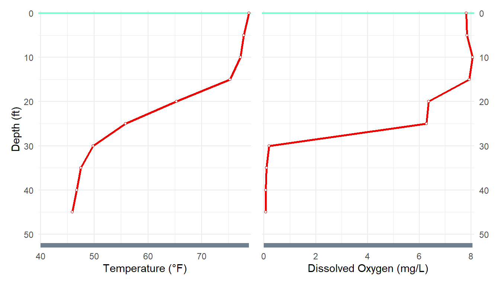
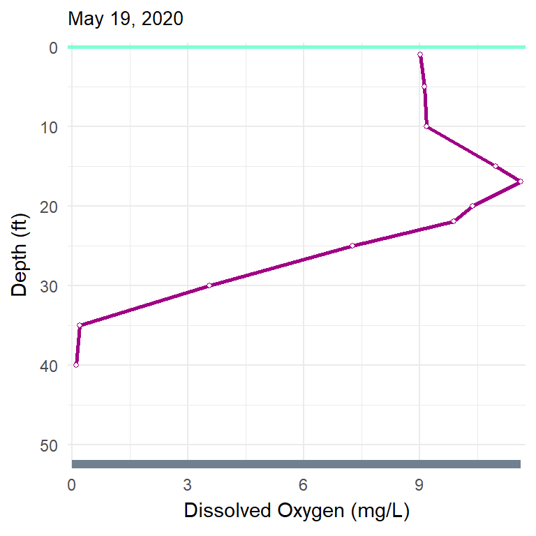
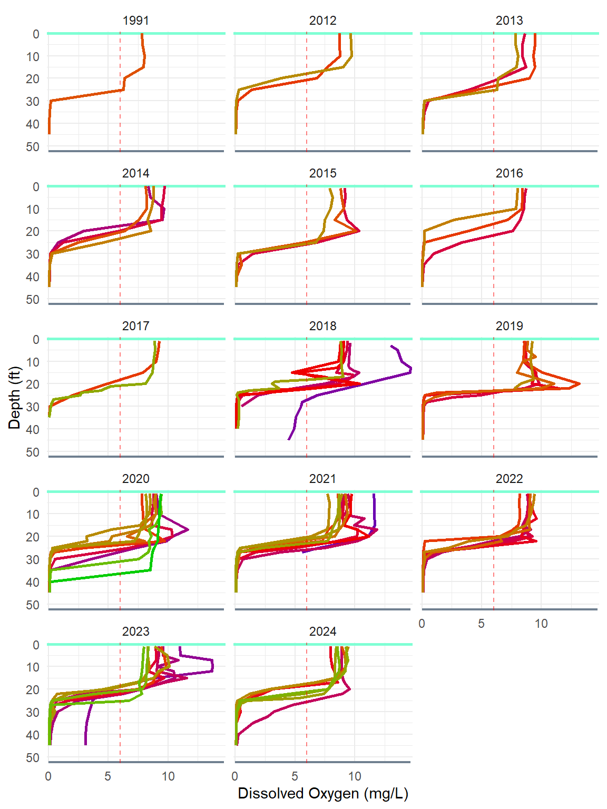

Introduction
In a previous post I introduced the Pike Chain of Lakes, explained temperature profile plots and the typical seasonality of temperature by depth data, and examined temperature by depth data that are publicly available through the Wisconsin DNR Citizen Lake Monitoring Network. Here I explore dissolved oxygen data from the same source.
Temperature Oxygen Relationship & Seasonality
As noted in the previous post, deep lakes in our area develop a thermocline in the summer, with relatively warm water near the surface (to approximately 25-30 feet) and relatively cool water near the bottom of the lake, with a zone of rapidly decreasing temperature (the thermocline) in between. The colder deeper water is more dense then the warmer surface waters and the thermocline in between limits the ability of the water in these two zones to mix. Generally, all plant life and plant growth occurs in the warmer surface waters, thus, producing oxygen (in dissolved format) for this zone. In contrast, in the deeper zone, no new oxygen is being added and oxygen is being used by bacteria as organic matter is broken down. These processes result in a faily well oxygenated zone above the thermocline and an area of (sometimes extreme) oxygen depltion below the thermocline. The result is that the dissolved oxygen profile tends to be very similar to the temperatue profile (Figure 1).

The oxygen profile just described sets up quickly on our lakes following the spring turnover period. Our Eagle Lake data does not include samples from early enough in the year to show the vertical mixing throughout the water column. However, Figure 2 shows the general pattern described above for all sample dates, but also shows the general tend that dissolved oxygen in the upper layer is higher in the early and late samples as cooler water can hold more dissolved oxygen.

Eagle Lake DO Profiles

Resources
- Temperature and Oxygen at North American Lake Management Society
- Dissolved Oxygen and Temperature at Michigan State U.
- Vertical Mixing and Turnover at Britannica.com
- Thermocline at BoatSafe.com
- Water Quality Criteria from the EPA (see Table 1 on page 216 for DO concentrations)